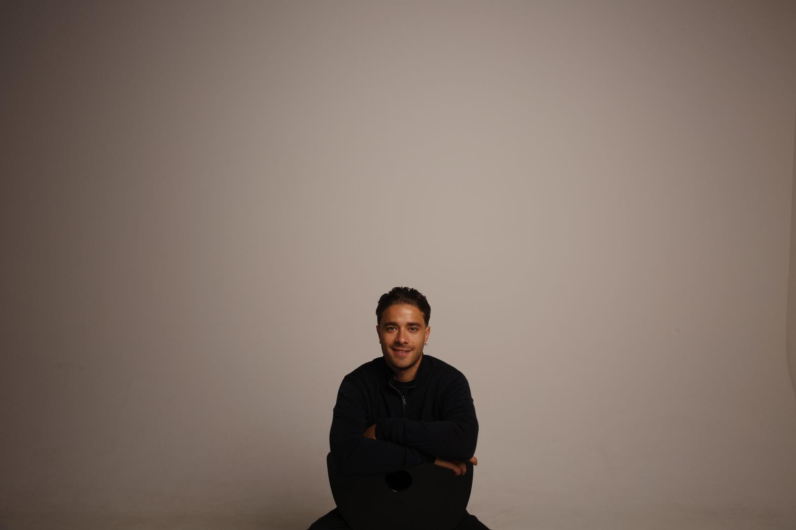

W¹ab 690 €
Start
Ein starker One-Pager für Handwerk, Praxis oder Café. In zwei Wochen online.
- Responsives Design für alle Geräte
- Texte & Struktur, die verkaufen
- Impressum & Datenschutz eingebunden
- Google-Unternehmensprofil eingerichtet
Ich gestalte Websites, die Kundschaft gewinnen, und bringe KI in Unternehmen, sodass Menschen weniger verwalten und mehr gestalten.
Kostenloser Website-CheckEin starker One-Pager für Handwerk, Praxis oder Café. In zwei Wochen online.
Mehrseitige Website mit klarer Markenwirkung und Funktionen, die Arbeit abnehmen.
Ihre Seite ist in die Jahre gekommen? Ich mache sie modern, schnell und mobil.
Halbtägiger Workshop mit Ihrem Team: Wo hilft KI wirklich, wo nicht?
Ein konkreter Prototyp, der ab Tag eins Zeit spart.
Strategische Begleitung über Wochen oder Monate, vom Ist-Zustand zur KI-fähigen Organisation.
Alle Preise sind Richtwerte. Jedes Projekt bekommt vorab ein festes Angebot.
Viele Unternehmen kaufen KI-Tools und hoffen auf Wirkung. Ich gehe den umgekehrten Weg: zuerst verstehen, wie gearbeitet wird, dann gemeinsam gestalten, wo KI entlastet. Als strategischer Designer übersetze ich zwischen Geschäftsführung, Team und Technik.
* Transformation gelingt mit Menschen, nicht über sie hinweg.
Interviews, Hospitation und Prozess-Mapping. Wo geht heute Zeit verloren, was frustriert, was ist sensibel?
Ergebnis: Chancen-LandkarteSchnelle Prototypen statt langer Konzepte. Wir testen KI-Lösungen an echten Aufgaben, bevor investiert wird.
Ergebnis: getesteter PilotSchulung, Leitlinien und klare Verantwortlichkeiten, damit die Lösung bleibt, wenn ich gehe.
Ergebnis: KI-fähiges Team30 Minuten, kostenlos. Vor Ort in Reutlingen und Umgebung oder per Video.
Struktur, Look und ein Festpreis. Keine Überraschungen.
Sie sehen früh echte Entwürfe und geben direkt Feedback.
Online gehen, einweisen, auf Wunsch weiter begleiten.

★ M.A. Strategic DesignIch bin in Reutlingen aufgewachsen. Bevor ich Design studiert habe, habe ich in der Logistik bei Bosch und Mercedes-Benz gearbeitet. Dann folgten ein B.A. Internet of Things und ein M.A. Strategic Design an der HfG Schwäbisch Gmünd, UI/UX-Design bei Bosch Sensortec und Ausstellungsdesign für Marken wie BMW.
Kein klassischer Designer, kein klassischer Ingenieur: Ich arbeite dazwischen. Genau das brauchen Unternehmen, wenn Technik auf Alltag trifft. Ich verstehe, wie etwas gebaut ist, und wie es sich für die Menschen anfühlt, die damit arbeiten.
Ein One-Pager ist meist in zwei Wochen online, eine mehrseitige Website in drei bis sechs Wochen, je nachdem, wie schnell Inhalte und Feedback kommen.
Nein. Ich entwickle Texte gemeinsam mit Ihnen, mit KI-Unterstützung und Ihrem Fachwissen. Fotos können wir vor Ort machen oder passende Bilder auswählen.
Domain und Hosting liegen meist bei wenigen Euro im Monat. Auf Wunsch übernehme ich Pflege und Updates zum monatlichen Festpreis.
Oft gerade dort. Schon einfache Werkzeuge sparen bei Angeboten, E-Mails oder Social Media Stunden pro Woche. Im KI-Kompass finden wir heraus, ob und wo es sich für Sie lohnt.
Websites werden DSGVO-bewusst gebaut, ohne unnötige Tracker. Bei KI klären wir vorab, welche Daten in welche Werkzeuge dürfen, und halten das in Leitlinien fest.
Schicken Sie mir Ihre Adresse. Sie bekommen eine ehrliche Einschätzung mit drei konkreten Verbesserungen, kostenlos.
Check anfragen 2.0Sie wollen wissen, wo KI Ihnen Arbeit abnimmt? Lassen Sie uns einen Workshop-Termin finden.
Workshop anfragen 3.0Fragen, Ideen oder nur ein Kaffee in Reutlingen. Ich antworte innerhalb von 24 Stunden.
Sag Hallo